インターバル速歩のためのシンプルなタイマーです。ゆっくり歩きモードと速歩モードを3分毎に切り替えます。モード切り替え時のタイミングは Apple Watch の振動でお知らせします。心拍数、合計時間、合計距離をリアルタイムで表示しますので、現在の心拍数をモニターして、自分の目標心拍数にするように歩く速度を調整できます。
スタート画面の「早歩きで開始」トグルボタンで、ゆっくり歩きモードで開始するのか、早歩きモードで開始するのかを選択し、スタートボタンを押します。
デフォルトは「早歩き開始」トグルボタンはオフで、ゆっくり歩きモードでの開始となります。
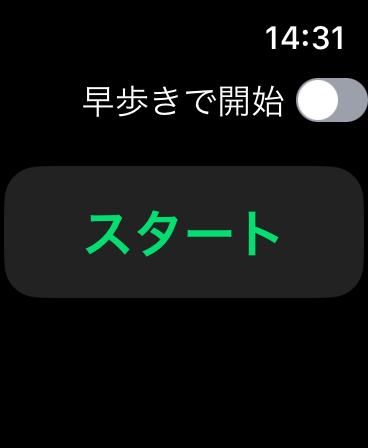 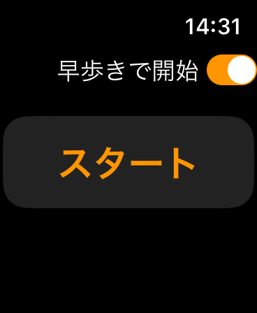スタートボタンをタップすると、モードが３秒間表示されます。
この時モードを知らせる振動があります。
ゆっくり歩きモードの時にはすばやく2回の振動が1秒おきにあり、早歩きモードの時にはすばやく3回の振動が1秒おきにあります。
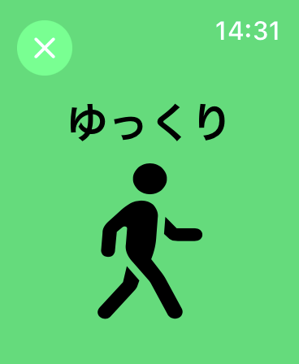その後、そのモードでの３分間のカウントダウンタイマー画面が表示されます。
カウントダウンタイマーリングの中には、このモードでの残り時間、心拍数、合計時間、合計距離がリアルタイムで表示されます。
自分の目標心拍数を目指して歩くスピードを調整することができます。
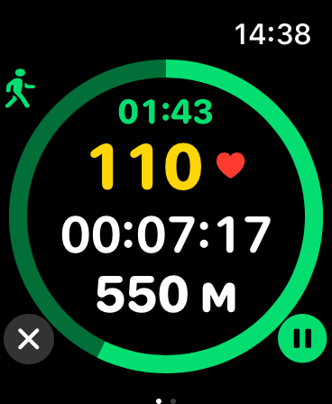そのモードの残り時間が3秒になると1秒に1回の振動があり、もうすぐモードが切り替わることをお知らせします。
モードが切り替わるとその時のモードが３秒間表示され、モードに合わせた振動があります。
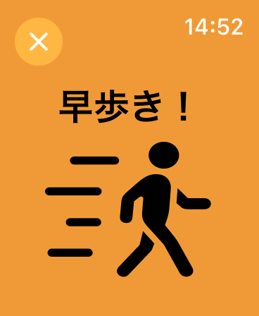その後、その切り替わったモードでのカウントダウンタイマーが表示されます。
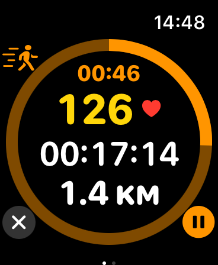画面右下のポーズボタンをタップすると一時停止することができます。
この時リングの内側の表示が半透明になり、ポーズボタンがプレイボタンに切り替わります。
プレイボタンをタップすると再開します。
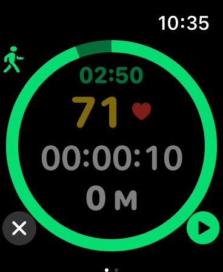画面を右側にスライドさせると音楽やポッドキャストをコントロールすることができます。
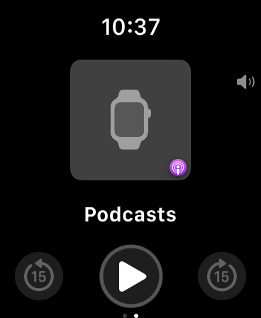終了時には画面左下の終了ボタン「X」をタップします。
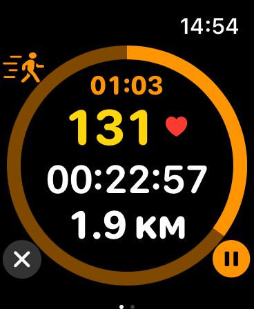終了するとサマリー画面が表示されます。
合計時間、合計距離、合計キロカロリー、平均心拍数、最大心拍数が表示されます。
終了ボタンまたは X ボタンをタップするとスタート画面に戻ります。
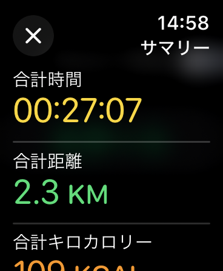 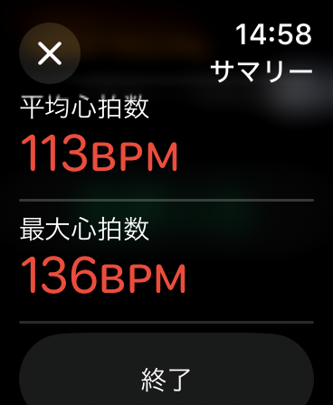何かご不明な点がございましたらお問合せください。
nakagawasoftware@gmail.com